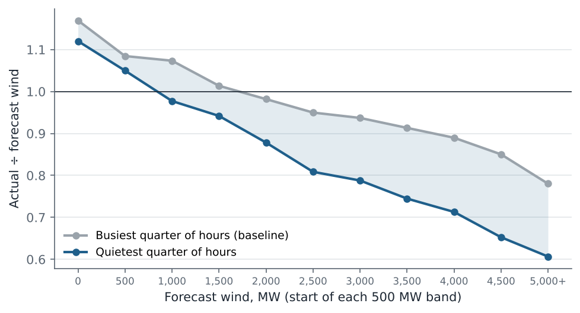
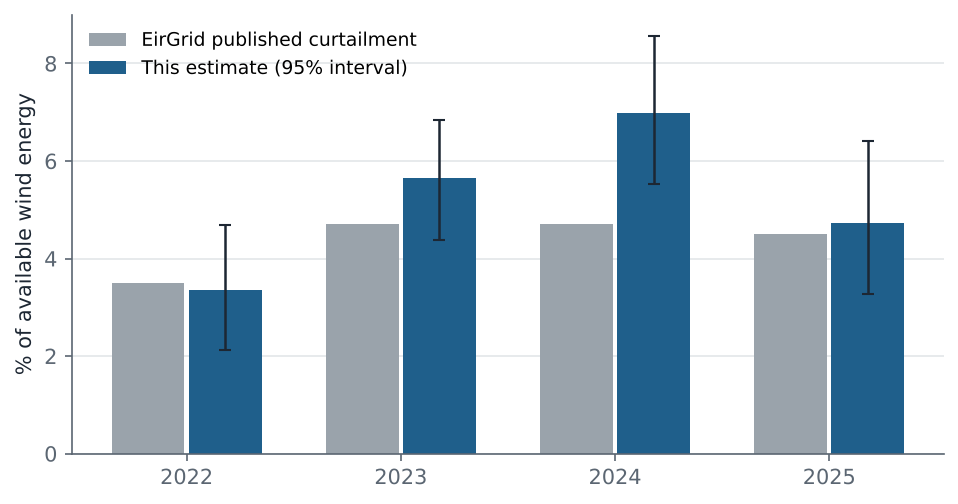
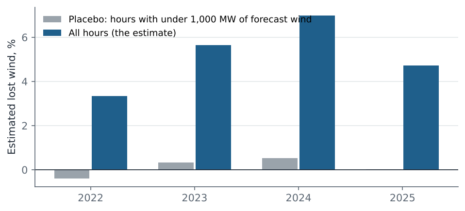
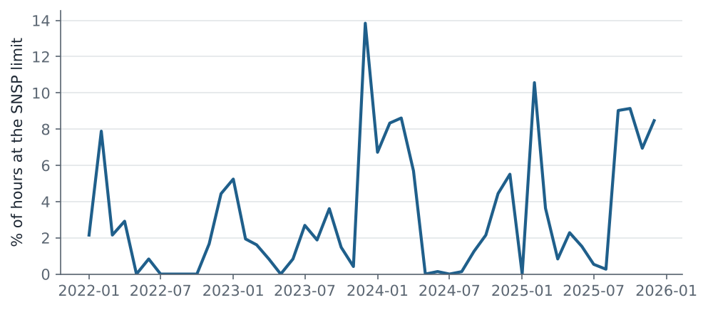
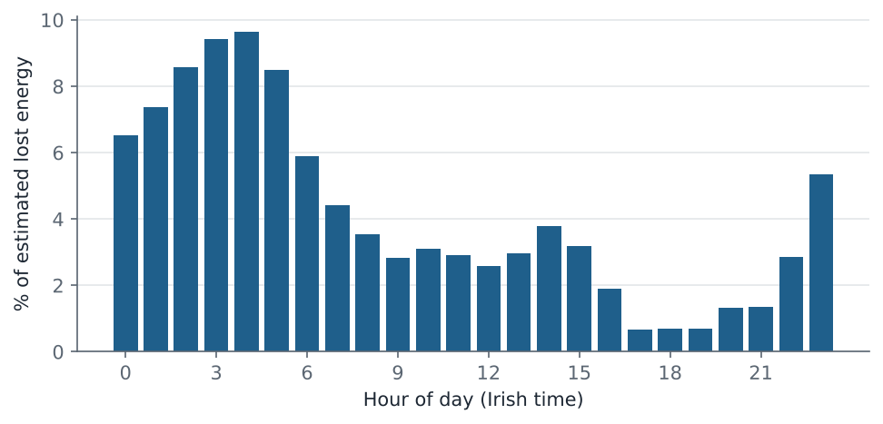
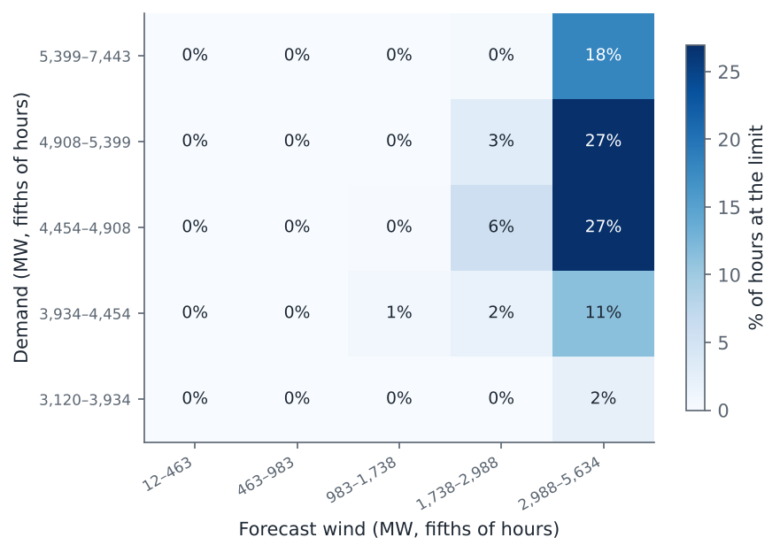

Ireland and Northern Ireland · 2022–2025 · public EirGrid data
How much wind does the all-island grid turn away, and when?
EirGrid reports once a year how much wind energy was turned down because of system-wide limits. This analysis rebuilds that figure hour by hour from the public 15-minute data on the Smart Grid Dashboard, checks it against the official numbers, and shows when the limits bind.
1. The footprint: on quiet days, the same wind gives less power
EirGrid's forecast over-predicts in windy hours, so actual output falls below the forecast as wind rises in every hour. But among hours with the same forecast wind, output is lower still when demand is low, which is when system-wide limits bind. At 4,500–5,000 MW of forecast wind, the quietest quarter of hours produced 23% less than the busiest quarter. Forecast errors do not depend on demand; system limits do. That gap is what this analysis measures.

2. The estimate against EirGrid's published figures
Within each year, season and 500 MW band of forecast wind, the busiest quarter of hours is the baseline. The shortfall of every other hour below it is counted as demand-linked turn-down: wind that was available but not used because demand was low. Across 4 years the estimate differs from EirGrid's published curtailment by 0.9 percentage points on average (it sits 0.8 points above it), and the official figure falls inside the 95% interval in 3 of 4 years. The largest gap is 2024 (7.0% against 4.7%), a year in which EirGrid's local constraints also jumped, and some constraints are likely to follow demand too.

| Year | Turned down, GWh | Estimate, % | 95% low | 95% high | EirGrid curtailment, % | EirGrid total dispatch-down, % | Hours at SNSP limit, % |
|---|---|---|---|---|---|---|---|
| 2022 | 472 | 3.3 | 2.1 | 4.7 | 3.5 | 8.5 | 1.8 |
| 2023 | 821 | 5.6 | 4.4 | 6.8 | 4.7 | 10.7 | 2.9 |
| 2024 | 997 | 7.0 | 5.5 | 8.6 | 4.7 | 14.0 | 3.6 |
| 2025 | 675 | 4.7 | 3.3 | 6.4 | 4.5 | 13.4 | 4.4 |
Robustness: with demand quarters defined within each year rather than each season, the estimate is 2022: 3.9%, 2023: 5.9%, 2024: 7.2%, 2025: 5.3%.
3. Does the method invent losses? A placebo test
When forecast wind is under 1,000 MW, system-wide limits essentially never bind, so the same calculation should find nothing there. It finds at most 0.5% in any year — close to zero, so the method is not turning forecast noise into losses.

4. When the limit binds
The share of hours within 2 points of the SNSP limit rose from 1.8% in 2022 to 4.4% in 2025. In 2024–2025, about 61% of the estimated lost energy fell between 11 pm and 7 am, when demand is lowest. Demand that can move into those hours (electric-vehicle charging, storage, heating) is the cheapest way to use more of this wind.



Method
Four EirGrid Smart Grid Dashboard series for the whole island (actual wind, forecast wind, SNSP, demand), 15-minute readings averaged to the hour, 2022–2025. Each hour is placed in a year, a season, a 500 MW band of forecast wind and a quarter of demand within its year and season. The busiest quarter's actual ÷ forecast ratio in each band is the baseline; bands without baseline hours borrow the nearest band. Lost energy is the baseline ratio times forecast, minus actual, summed over the other three quarters. The percentage divides by actual wind plus the loss. Intervals come from resampling whole days 1,000 times. SNSP limits read from the data (99.5th percentile): 2022: 74%, 2023: 75%, 2024: 74%, 2025: 75%.
Limitations
The busiest hours are not free of curtailment, so for curtailment that follows the SNSP rule
this is a lower bound: on synthetic data where the limit also binds in busy hours, it recovers under half
of the planted loss (see tests/run_tests.py). That it nonetheless reaches EirGrid's figure on real data
means it also counts other turn-down that follows demand, such as minimum conventional generation and some
local constraints, so it is best read as an independent indicator of the same size, not a reconstruction. Season and forecast band absorb most differences in forecast
behaviour, but not all. EirGrid's figures use each wind farm's own availability signal, which is not public.
Solar is not included. This is an independent estimate, not a replacement for the official figures.
Data quality checks
| Check | Result | Detail |
|---|---|---|
| coverage wind_mw | pass | 99.96% of hours present |
| coverage wind_fc_mw | pass | 99.99% of hours present |
| coverage snsp_pct | pass | 99.96% of hours present |
| coverage demand_mw | pass | 99.96% of hours present |
| wind in plausible range | pass | min -2 MW, max 4648 MW |
| wind forecast in plausible range | pass | min 10 MW, max 5634 MW |
| SNSP in 0-100% | pass | min 0.2%, max 76.5% |
| demand in plausible range | pass | min 2903 MW, max 7443 MW |
| forecast tracks actual wind | pass | correlation 0.952 |
| no stuck wind readings (6+ identical hours) | pass | 1 stuck hours |
Reproduce it
pip install -r requirements.txt, then python run_pipeline.py downloads the data and rebuilds
every number and figure; python tests/run_tests.py checks the method on synthetic data with known answers.